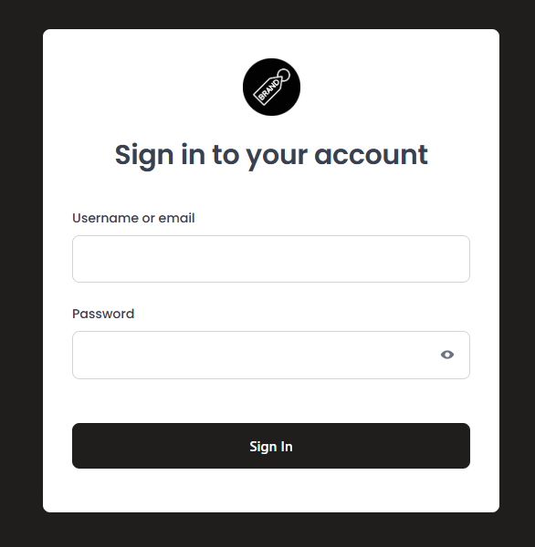

WYSIWYG - A Keycloak theme editing approach
What you will learn:
- Use a visual editor for Keycloak theme editing
- Different ways to customize the look and feel
- How to export a deployable artifact from the editor
Contents
- Keycloak login theming
- What the editor does
- Live demo
- Preview generation logic
- Architecture + theme round-trip
- FAQ + close
The login page you want

What does a platform team want from Keycloak theming?
- Brand-consistency
- Little to no freemarker templating
- Easy to style — even if CSS isn’t their day job
- Fast shipping
Existing solutions
Hand editing
Directly modify CSS, FTL templates and assets in the Keycloak theme folder for full control over every detail
Quick theme
Keycloak's built-in dev preview feature; set a handful of style variables and see results immediately
Keycloakify
Build login pages with Single Page Application Frameworks with full component-level control and type safety
What the editor gives you
- Visual editing with immediate preview of all pages
- Quick start presets
- Upload assets
- Undo/redo + device preview
- Import a theme JAR to continue editing
- Export deployable output
- CLI for local theme development with live reload
Workflow overview
Option A: Quick start
Get 80% of the look fast
Option B: Deep customization
npx keycloak-theme-editor initFull control, no fork needed
Live demo
Option A: Quick start
- Pick a preset
- Adjust brand colors + fonts
- Add logo
- Make a targeted CSS tweak
- Export as folder and test in Keycloak
Architecture overview
What you see
React SPA with a sandboxed preview iframe.
What happens
- Every edit updates the corresponding React state.
- State is persisted in localStorage.
- No server upload; data stays on your machine.
What you get
Standard Keycloak theme artifacts generated from state.
How previews are generated
The editor needs realistic HTML to display
Mock context data
Typed Keycloak context objects defined in TypeScript
FTL rendering
A Java tool compiles .ftl templates with mock data into static HTML and strips scripts
Pages JSON
Rendered HTML saved as a JSON artifact the editor loads at runtime
The CLI runs this pipeline automatically and watches for file changes.
Theme round-trip
Via Browser
- Export JAR or ZIP.
- CSS, assets, and quick-start settings restored.
- Works for themes that were generated from the editor without custom FTLs.
Via Command Line Interface
- Export with direct File System access
- Automatically imports any theme folder; quick-start stays locked when theme was created outside editor
- Freemarker can be live edited.
What’s next?
- Preview other Keycloak themes: Support additional theme types like email and account theme
-
Edit translations in the editor:
Directly view and modify
messages.properties - Keycloak versioning support: Choose your Keycloak version to ensure theme compatibility
FAQ
- Does my data leave the browser? No. Editing is client side only.
- Does this work for account/email themes? Not yet. The current scope is login themes.
- Can I use my own FreeMarker templates? Yes. Run
npx keycloak-theme-editor init, add your FTL files, then run the CLI. - Can our team collaborate on a theme? There is no backend server, use Git.
Try it yourself
What are your pain points when theming?